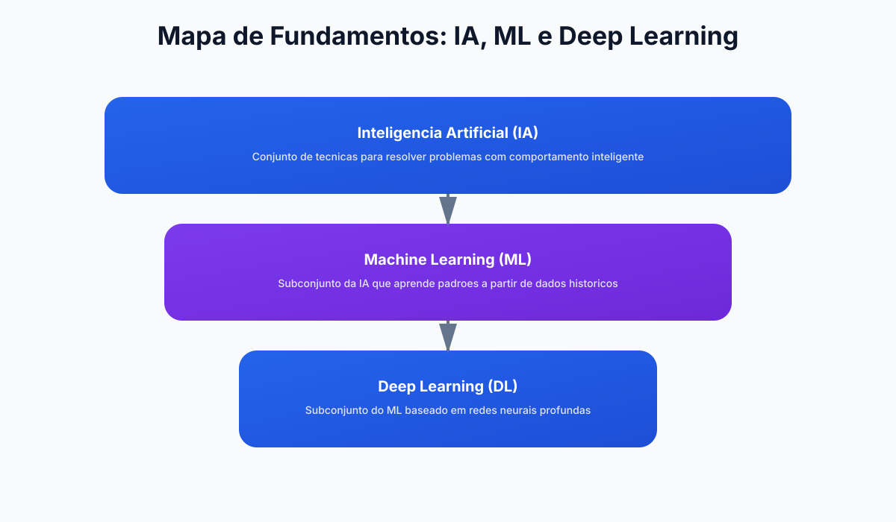

Base conceitual
Entenda IA, ML e Deep Learning sem ruído.
Módulo 1
Este módulo estabelece a linguagem-base para você discutir IA com clareza na empresa. Ao final, você saberá diferenciar IA, Machine Learning e Deep Learning, além de reconhecer os principais tipos de IA aplicados ao ambiente administrativo.
Por que esta imagem? Ela traduz a base tecnológica do módulo e prepara a leitura para conceitos de IA, ML e Deep Learning.
Entenda IA, ML e Deep Learning sem ruído.
Converta conceito em caso de uso real.
Evite começar sem problema bem definido.



Pense nesses conceitos como camadas. IA é o guarda-chuva, ML é um subconjunto e Deep Learning é um subconjunto do ML.
| Conceito | Definição prática | Exemplo administrativo | Complexidade |
|---|---|---|---|
| IA | Sistemas que simulam capacidades cognitivas | Assistente para redação de relatórios | Baixa a alta |
| Machine Learning | Modelos que aprendem padrões com dados | Previsão de inadimplência de clientes | Média a alta |
| Deep Learning | Redes neurais profundas para dados complexos | Extração automática de dados em documentos | Alta |
Focada em tarefas específicas. É a forma de IA mais comum no mercado e a mais útil para ganhos rápidos em administração.
Capacidade ampla semelhante à inteligência humana. Ainda é um objetivo de pesquisa, sem aplicação corporativa madura hoje.
Cria conteúdos novos a partir de instruções e dados de contexto. Excelente para comunicação interna, síntese e apoio analítico.
Sistema didático do módulo
Resumo
IA não substitui gestão estratégica. Ela amplia capacidade de análise e execução quando conectada a processos claros e dados confiáveis.
Exemplo real
Comece por tarefas repetitivas e de baixa ambiguidade, como triagem de solicitações ou classificação de documentos, para medir ganho rápido.
Prompt pronto
Use o prompt de mapeamento de processo deste módulo para sair da teoria e desenhar um piloto real com KPI e risco mapeados.
Atenção
Sem governança e revisão humana, a IA pode gerar decisões inconsistentes. Valide saídas críticas antes de institucionalizar o fluxo.
Um projeto de IA falha com frequência quando pula etapas de desenho. Para gestão administrativa, o ciclo de vida precisa ser simples e repetível: problema claro, dados organizados, modelo testado, implantação controlada e monitoramento contínuo.
Transforme dores vagas em perguntas específicas. Exemplo: em vez de "quero usar IA", formule "quero reduzir em 25% o tempo de triagem de solicitações".
Padronize campos, trate faltantes e remova inconsistências. Dados sem qualidade produzem automações pouco confiáveis e difíceis de defender para a liderança.
Valide desempenho em um conjunto piloto. Compare a recomendação da IA com a decisão humana e meça taxa de acerto, tempo e risco.
Depois de implantar, acompanhe drift de dados, falhas e indicadores de negócio. Projeto de IA não termina no go-live.
Prompt pronto para mapeamento de processo
Você é um especialista em melhoria de processos. Analise o processo descrito abaixo e proponha uma aplicação de IA com baixo risco e alto impacto. Entregue em formato de tabela com: etapa atual, gargalo, oportunidade com IA, ferramenta sugerida, esforço de implementação, KPI de sucesso. Processo atual: [descreva o processo em 5 a 10 linhas]
Uma empresa de serviços financeiros implementou IA para classificar solicitações de reembolso recebidas por e-mail. Resultado em 60 dias: redução de 42% no tempo de triagem e padronização dos critérios de resposta.
Use este roteiro para consolidar fundamentos de IA com profundidade técnica e aplicação administrativa.
IA, ML, Deep Learning, IA generativa, tipos de modelos e limitações.
Carga: 3h
Análise comparativa de aplicações em processos corporativos.
Carga: 2h
Mapeie um processo da empresa e proponha caso de uso com métrica.
Carga: 3h
Questionário reflexivo e revisão de conceitos essenciais.
Carga: 2h
Aplicacao pratica para transformar teoria de Modulo 1 em ganho operacional mensuravel.
Mapeie o fluxo atual de traducao de conceitos para negocio e identifique gargalos de tempo, custo e retrabalho.
Evidencia: mapa AS-IS com 3 gargalos priorizados.
Desenhe um piloto de 2 semanas para fundamentos de IA, ML e deep learning, com escopo controlado e checkpoints diarios.
Evidencia: plano de execucao com dono, prazo e criterio de parada.
Defina baseline e metas para clareza conceitual da equipe, comparando antes vs depois com o mesmo periodo.
Evidencia: painel simples com 3 KPIs e tendencia semanal.
Implemente regras de revisao humana, classificacao de dados e trilha de auditoria das decisoes.
Evidencia: checklist de risco com responsaveis e frequencia de revisao.
Planeje extensao para um segundo processo mantendo qualidade, custo sob controle e aprendizagem da equipe.
Evidencia: roadmap 30-60-90 dias com marco de escala.
Prompts curados para acelerar analise, decisao e implantacao com foco em Modulo 1.
Prompt 1: Diagnostico executivo
Atue como consultor de fundamentos de IA, ML e deep learning. Faça um diagnostico rapido do processo [traducao de conceitos para negocio] com 5 gargalos, impacto estimado e prioridade de ataque.
Prompt 2: Plano 30-60-90
Monte um plano 30-60-90 dias para implementar IA em [traducao de conceitos para negocio] incluindo objetivos, entregas por fase, donos e riscos.
Prompt 3: KPIs e baseline
Defina um modelo de medicao para [clareza conceitual da equipe] com baseline, meta trimestral, formula e frequencia de acompanhamento.
Prompt 4: Governanca minima
Crie uma politica minima de uso de IA para este contexto com regras de dados, revisao humana, aprovacao e auditoria.
Prompt 5: Escala com controle
Proponha como escalar o piloto para outra area sem perder qualidade, informando criterios de readiness e plano de capacitacao.
Use os prompts abaixo para traduzir IA/ML/DL em linguagem de negócios e treinar a equipe em conceitos fundamentais.
Prompt: Explicar a diferença entre IA, ML e Deep Learning com exemplos de negócio
Explique de forma didática e com exemplos práticos relevantes para [seu setor], a diferença entre: 1. Inteligência Artificial (IA) 2. Machine Learning (ML) 3. Deep Learning (DL) Para cada um: - Defina em linguagem simples (evite jargão) - Dê 1 exemplo concreto de seu setor - Indique quando usar cada uma (não confundir com outra) - Pontue o nível de complexidade e custo - Liste o principal risco operacional Objetivo: material para treinar gestores que não têm fundo técnico mas precisam tomar decisões sobre IA.
Prompt: Comparar tipos de IA (simbólica, estatística, generativa) para um caso específico
Tenho este problema de negócio: [descreva o desafio administrativo/operacional]. Para resolvê-lo, compare qual abordagem é melhor: 1. IA Simbólica (regras explícitas "se/então") 2. IA Estatística (ML com dados históricos) 3. IA Generativa (LLM como ChatGPT/Claude) Para cada uma, forneça: - Como funcionaria na prática? - Quanto de dado histórico seria necessário? - Qual é o tempo de implementação? - Qual é o risco se falhar? - Qual é o custo estimado? - Qual seria o primeiro teste (MVP)? Recomendação: qual começar primeiro? Por quê?
Prompt: Checklist técnico mínimo antes de começar um projeto de ML
Estou pronto para iniciar um projeto de ML para [seu caso/processo]. Forneça um checklist de pré-requisitos técnicos e organizacionais que precisam estar prontos ANTES de começar: Seção 1: Dados - [ ] Quantos exemplos históricos você tem? - [ ] Todos os dados estão em um mesmo lugar/formato? - [ ] Como será feita a limpeza e validação de dados? Seção 2: Problema - [ ] Qual é exatamente o problema que quer resolver? - [ ] Como você medicirá sucesso? - [ ] Qual é o baseline (como funciona hoje)? Seção 3: Operação - [ ] Quem vai treinar o modelo? - [ ] Como o modelo será colocado em produção? - [ ] Como você monitorará se o modelo continua funcionando bem? Seção 4: Governança - [ ] Há risco com privacidade ou conformidade? - [ ] Quem aprova as decisões do modelo? - [ ] Como você explicará as decisões? Se responder "não" ou "sem informação" para alguma pergunta, detalhe o plano para resolver antes de iniciar.